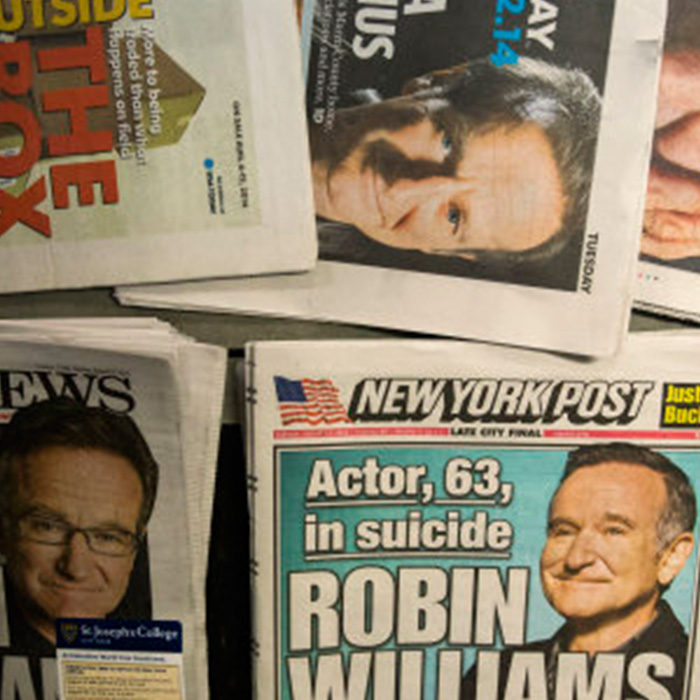
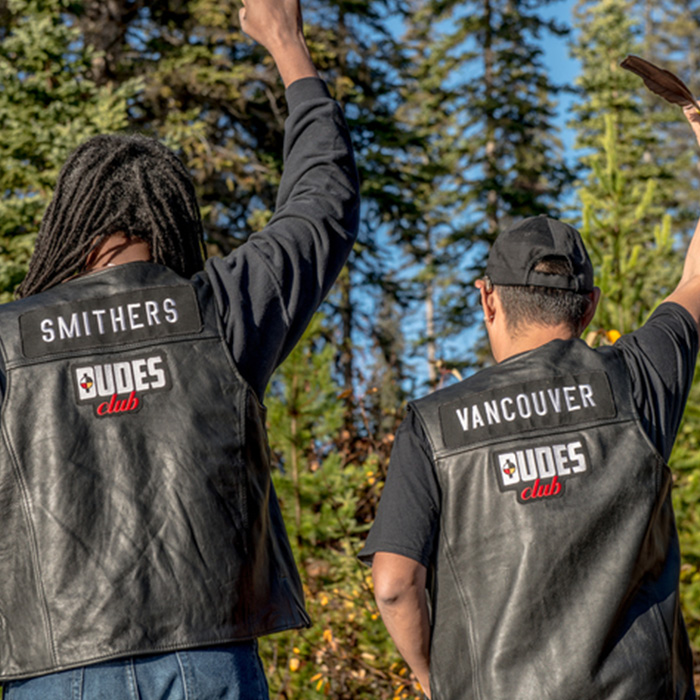
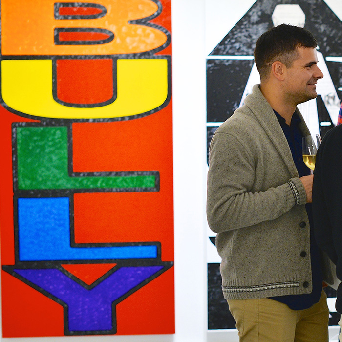

Our Prisons are Full of Men
The Hill Times
Too Many Rural Canadian Communities Are Losing Young Men To Suicide
Huffington Post

Reporting On Suicide 3 Years After Robin Williams
Huffington Post

Community-Based Programs Can Help Reduce Male Suicide
Huffington Post / The Hill Times / The Province
Trois ans plus tard: Robin Williams et la couverture sur l’acte que l’on tait
The Huffington Post
